Unreal Integration 2.02
These methods are used to control individual Event Instances.
Methods:
Get a parameter value on an FMOD Event Instance.
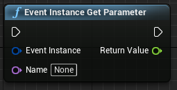
static float EventInstanceGetParameter(
FFMODEventInstance EventInstance,
FName Name
);
Will be deprecated in FMOD 2.01, use Event Instance Get Parameter Value instead.
Get a parameter value on an FMOD Event Instance.
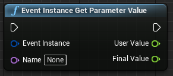
static void EventInstanceGetParameterValue(
FFMODEventInstance EventInstance,
FName Name,
float &UserValue,
float &FinalValue
);
Return whether this FMOD Event Instance is valid. The instance will be invalidated when the sound stops.
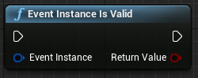
static bool EventInstanceIsValid(
FFMODEventInstance EventInstance
);
The instance will be invalidated when the sound stops.
Allow an FMOD Event Instance to continue past a sustain point.
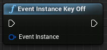
static void EventInstanceKeyOff(FFMODEventInstance EventInstance);
Play an FMOD Event Instance.
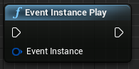
static void EventInstancePlay(
FFMODEventInstance EventInstance
);
Release an FMOD Event Instance.
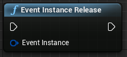
static void EventInstanceRelease(FFMODEventInstance EventInstance);
Set a parameter on an FMOD Event Instance.
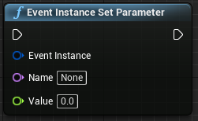
static void EventInstanceSetParameter(
FFMODEventInstance EventInstance,
FName Name,
float Value
);
Pause/Unpause an FMOD Event Instance.
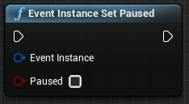
static void EventInstanceSetPaused(
FFMODEventInstance EventInstance,
bool Paused
);
Set pitch on an FMOD Event Instance.
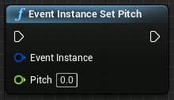
static void EventInstanceSetPitch(
FFMODEventInstance EventInstance,
float Pitch
);
Set an FMOD event property on an FMOD Event Instance.
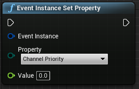
static void EventInstanceSetProperty(
FFMODEventInstance EventInstance,
EFMODEventProperty::Type Property,
float Value
);
Set 3D attributes on an FMOD Event Instance.
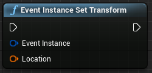
static void EventInstanceSetTransform(
FFMODEventInstance EventInstance,
const FTransform &Location
);
Set volume on an FMOD Event Instance.
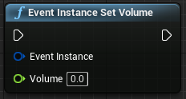
static void EventInstanceSetVolume(
FFMODEventInstance EventInstance,
float Volume
);
Mute/Unmute the bus.
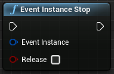
static void EventInstanceStop(FFMODEventInstance EventInstance, bool Release = false);